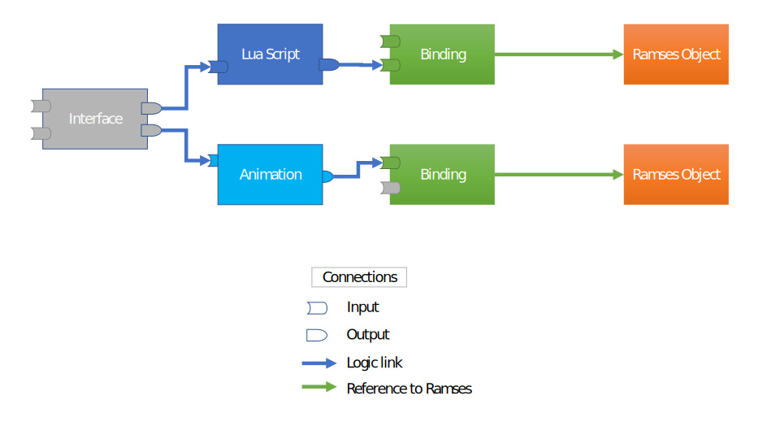

Overview
This page provides an overview of the Logic Engine C++ API, primary object types, structure and interaction.
Note
Prefer learning by example? Jump straight to the examples! Looking for a specific class or method? Check the class index
Object types and their relationships
The Logic Engine consists of a network of logical nodes with a set of inputs and outputs and
links between them to send data from one node to another.
The following graph shows an example of such network:
There are different types of logic nodes (Interfaces, Lua scripts, Animations, Bindings) which have different execution logic, but all share the same mechanism to link data between the nodes. Each node has a set of inputs and outputs which can be linked together to transfer data from one (node output) to another (node input).
The logic nodes have inputs and outputs which let them interact with other entities
(can be other logic nodes, or ramses objects, or application code/data). Logic nodes
can be linked together using directional links, where the output of one node provides its data to
the input of another node (more info on links).
Logical nodes can’t interact with Ramses objects directly. Instead, they
can link to Bindings which are designed to “bind” Ramses objects and modify
their properties’ values (node visibility, transformation values, material properties… etc.)
(more info on bindings).
The greyed-out slots in the image above represent input properties which are neither linked nor
have a statically configured value. In bindings, this denotes that the corresponding Ramses property
is not being updated by the Logic Engine (see also the section on data flow). In other nodes, these
properties will receive a default value at runtime (0, 0.0f, "", true etc.) unless explicitly set by the application
logic. Bindings’ input values are initialized with the values of the bound Ramses object, for all bindings except
ramses::RamsesAppearanceBinding.
Finally, Interface nodes have no execution logic, only inputs (and implicit outputs which are identical to the inputs).
Interfaces are supposed to be the bridge between application code/data and the Ramses/Logic asset.
Interface input values are supposed to be explicitly set at runtime, or statically linked to other outputs.
Ideally, the logic node network with interfaces should be designed so that once all the interfaces’ inputs are set, the
whole underlying network of nodes is fully defined, i.e. all inputs of all nodes are linked.
Data flow
The cornerstone of the Logic Engine is the ramses::LogicEngine::update() method which
“executes” the network of logic nodes and updates the values of the Ramses scene bound to them. The nodes
are executed based on a topological graph sort, where the traversal direction is given by the link
pairs (A, B) where A is an output and B is an input property in the logic graph
(as shown here).
The update logic of each node depends on its type. ramses::LuaScript nodes execute their run() function
and modify some or all of their outputs based on the logic defined in run().
Nodes which derive from ramses::RamsesBinding pass the values of their
input properties to the bound Ramses object. ramses::LuaInterface nodes
pass the values of their inputs to other nodes connected to the interface’s outputs.
Logic nodes are not executed on every ramses::LogicEngine::update() iteration in order to save performance.
However, it’s guaranteed that:
logic nodes which were just created will be executed on next update
logic nodes whose inputs received a new value (either from calling
ramses::Property::set()or from a link) will be executed on next updatebinding properties which received a value (regardless of their current value or from the value stored in Ramses) will overwrite the value in Ramses on next update. This works both for direct
ramses::Property::set()calls and for values received over linksTimerNodes will be executed always, regardless if their inputs were set
Additionally, bindings’ properties are applied selectively - e.g. setting the scaling property of a ramses::RamsesNodeBinding
will result in a call to ramses::Node::setScaling(), but will not cause setting any other ramses::Node properties.
This can be useful if you want to have your own logic e.g.
to control the visibility of all Ramses nodes, and only use a Logic Engine to control transformation properties. In that case
you should never set the visibility property of a Binding object, instead set the visibility directly on the bound ramses::Node.
Warning
We strongly discourage setting values to Ramses objects and to Ramses Logic bindings in the same update cycle
for the same property to avoid unexpected behavior. At any given time, use one or the other, not both mechanisms to set values!
The Logic Engine can be also serialized and deserialized into binary files for fast loading.
The above data flow rules still apply as if all the scripts and binding objects were just created. The first call to
ramses::LogicEngine::update() after loading from file will execute all scripts. Binding values will only be passed further to Ramses
if their values were modified, e.g. by a link which produced a different value than before saving, or if the application
called ramses::Property::set() explicitly on any of the bindings’ input properties. For more details on saving and loading,
see the section further down.
Logic node creation
The entry point to RAMSES logic is a factory-style class ramses::LogicEngine which can
create instances of all other types of objects supported by RAMSES Logic:
ramses::LuaScriptramses::RamsesNodeBindingramses::RamsesAppearanceBindingramses::RamsesCameraBinding
See the full list over at the class index.
You can create multiple instances of ramses::LogicEngine, but each copy owns the objects it
created, and must be used to destroy them, as befits a factory class.
You can create scripts using the ramses::LogicEngine class like this:
1#include "ramses-logic/LogicEngine.h"
2
3using namespace ramses::logic;
4
5std::string source = R"(
6 function interface(IN, OUT)
7 IN.gear = Type:Int32()
8 OUT.speed = Type:Float()
9 end
10
11 function run(IN, OUT)
12 OUT.speed = IN.gear * 15
13 end
14)"
15
16LogicEngine engine;
17LuaScript* script = engine.createLuaScript(source, "simple script");
18script->getInputs()->getChild("gear")->set<int32_t>(4);
19
20script->execute();
21float speed = script->getOutputs()->getChild("speed")->get<float>();
22std::cout << "OUT.speed == " << speed;
For details regarding the Lua syntax and its specifics, check the dedicated section on Lua.
ramses::LogicNode (the base class of ramses::LuaScript) provides an interface to access the inputs and outputs declared by the interface()
function - see ramses::LogicNode::getInputs() and ramses::LogicNode::getOutputs().
You can link nodes to form a more sophisticated logic execution graph.
You can bind to Ramses objects to control a 3D Ramses scene.
Finally, the ramses::LogicEngine class and all its content can be also saved/loaded from a file. Refer to
the section on saving/loading from files for more details.
Object lifecycle
All objects besides the ramses::LogicEngine instance follow a strict factory pattern.
An object X is created by a method of the shape X* LogicEngine::createX(...). The pointer
returned shall not be freed or deleted, instead objects must be destroyed by calling ramses::LogicEngine::destroy().
Note
This may seem strange for a library which is based on C++17, but there are good reasons
for this design choice. Smart pointers don’t work well together with Windows DLL’s, specifically
when combining different CRTs. In order to provide a stable API on Windows
we chose to use raw pointers and hide object creation/deletion behind a pimpl/factory pattern.
The ramses::LogicEngine doesn’t create or destroy objects on its own - all data is
explicitly created by calling create and destroy methods. There are two special cases worth mentioning:
if
ramses::LogicEngineis destroyed, all objects are destroyed as well and theirs pointers invalidatedramses::LogicEngine::loadFromFile()destroys all objects previously created before the new content is loaded from the file
Note
Loading data from files will invalidate all previous pointers to objects in
the ramses::LogicEngine. To avoid that, we recommend generally avoiding using
a logicengine instance which already has content to load from files, and instead always
create a fresh instance.
Creating links between nodes
One of the complex problems of 3D graphics development is managing complexity, especially for larger projects.
For that purpose it is useful to split the application logic into multiple logic nodes (usually Lua scripts), so that individual nodes
can remain small and easy to understand. To do that, Ramses Logic provides a mechanism to link node
properties - either statically or during runtime, in order to pass data from 1 producer node to N
consumer nodes.
Here is a simple example how links are created to link two Lua scripts:
1LogicEngine logicEngine;
2LuaScript* sourceScript = logicEngine.createLuaScript(R"(
3 function interface(IN, OUT)
4 OUT.source = Type:String()
5 end
6 function run(IN, OUT)
7 OUT.source = "World!"
8 end
9)");
10
11LuaScript* destinationScript = logicEngine.createLuaScript(R"(
12 function interface(IN)
13 IN.destination = Type:String()
14 end
15 function run()
16 print("Hello, " .. IN.destination)
17 end
18)");
19
20logicEngine.link(
21 *sourceScript->getOutputs()->getChild("source"),
22 *destinationScript->getInputs()->getChild("destination"));
23
24// This will print 'Hello, World!' to the console
25logicEngine.update();
In this simple example, the ‘sourceScript’ provides string data to the ‘destinationScript’ every time the LogicEngine::update
method is called. The ‘destinationScript’ receives the data in its input property and can process it further. After
two scripts are linked in this way, the ramses::LogicEngine will execute them in a order which ensures data consistency, i.e.
scripts which provide data to other scripts’ inputs are executed first. In this example, the ‘sourceScript’ will be executed before
the ‘destionationScript’ because it provides data to it over the link.
Creating links as shown above enforces a so-called ‘directed acyclic graph’, or DAG, to the ramses::LogicNode inside a given
ramses::LogicEngine. In order to ensure data consistency, this graph can not have cyclic dependencies, thus following operations
will cause an error:
Creating a link from any
ramses::LogicNodeto itselfCreating a link from node A to node B if node B is linked to node A (links have a direction and this creates a two-node loop!)
Any set of
ramses::LogicNodeinstances whose links form a (directed) circle, e.g. A->B->C->A (this is caught at update time, not at link creation time)
There is an exception to the ‘no cycles’ rule if using weak links. These allow data propagation in a cycle which would not be
possible with regular links. Weak links should be used only if absolutely necessary and it is essential to fully understand their caveats
and limitations first before using them. See ramses::LogicEngine::linkWeak() for details.
A link can be removed in a similar fashion:
1logicEngine.unlink(
2 *sourceScript->getOutputs()->getChild("source"),
3 *destinationScript->getInputs()->getChild("destination"));
For more detailed information on the exact behavior of these methods, refer to the documentation of the ramses::LogicEngine::link()
and ramses::LogicEngine::unlink() documentation. The data flow section explains in detail how data is passed throughout the
network of logic nodes when connected by links.
Linking logic nodes to Ramses scenes
Lua scripts would not make much sense on their own if they can’t interact with Ramses scene objects. The way to
link script output properties to Ramses scene objects is by creating ramses::RamsesBinding instances and linking their inputs to scripts’ outputs.
There are different binding types depending on the type of Ramses object - refer to ramses::RamsesBinding for the full list of derived classes.
Bindings can be linked in the exact same way as scripts can. In fact, they derive from the
same base class - ramses::LogicNode. The only
difference is that the bindings have only input properties (the outputs are implicitly defined and statically linked to the Ramses
objects attached to them), whereas scripts have inputs and outputs explicitly defined in the script interface.
One might wonder, why not allow to directly link script outputs to Ramses objects?
The reason for that is two-fold:
Separation of concerns between pure script logic and
Ramses-related scene updatesThis allows to handle all inputs and outputs in a generic way using the
ramses::LogicNodeclass’ interface from which bothramses::LuaScriptandramses::RamsesNodeBindingderive
The section on data flow describes how data is passed throughout the network of logic nodes and when bound Ramses objects are updated and when not.
Note
Binding input values are initialized with the same values as the Ramses objects they “bind”. The only exception to this are Appearance bindings - extracting all data from Ramses Appearances would incur performance costs not worth the convenience.
Dynamic sorting of content
The Logic Engine provides a mechanism to dynamically sort select ramses::MeshNode and ramses::RenderGroup
objects. To do so, you can use the ramses::RamsesRenderGroupBinding class. The class works similarly to
other binding classes - it statically binds to Ramses content (configured using ramses::RamsesRenderGroupBindingElements)
and allows setting the rendering priority of the bound content by setting input properties of type Int32 with a name as
configured in ramses::RamsesRenderGroupBindingElements.
Animations
Animations are central to any dynamic real-time scene. It is possible to implement simple animations with Lua scripts
or even write your own C++ wrapper which changes a value over time, linked to a Ramses object via ramses::RamsesBinding.
However, such solution would not scale well for more complex animations with preauthored
splines of keyframes and timestamps. ramses::AnimationNode and ramses::DataArray are designed to provide a good
compromise between performance and a data-centric design which imports animation data from external sources or formats.
The animation support in Ramses Logic is provided by the following two classes:
ramses::DataArray- contains the animation data (keyframes and time stamps)ramses::AnimationNode- provides an interface to control and holds the current state of animations
Consider also using :class`ramses::TimerNode` for easy way to generate and provide timing information to ramses::AnimationNode.
Data Arrays
ramses::DataArray is a simple data container with immutable data. Various data types and interpolation types are supported (see the
class documentation for details). Data arrays by themselves have no meaning, they must be bundled in animation channels (ramses::AnimationChannel).
The contents of an animation channel depends on its type. For example, a simple linear animation only needs two data arrays - one for time stamps and
one for key frames. A complex cubic animation channel also needs tangent arrays. It is possible to reuse the same data array in multiple channels - e.g.
if multiple channels use the same time stamps (often the case for multi-channel animations).
Animation Nodes
ramses::AnimationNode holds the state of an animation and provides inputs to control it and outputs to check the
output values or to link them to other scripts or directly to instances of ramses::RamsesBinding.
To query input and output properties, use the corresponding methods in the base class ramses::LogicNode.
Based on how many animation channels were provided when creating the ramses::AnimationNode
has an output property of corresponding data type (matching the keyframes data type) for each channel.
The value of these outputs is updated after every ramses::LogicEngine::update() call and can be directly queried
or it can be linked to any other logic node, e.g. ramses::RamsesBinding.
ramses::AnimationNode has a simple control interface, the progress input is a point in [0,1] normalized range,
which tells the animation node logic to which position on the animation timeline to jump to during next update. The local animation
timeline is simply starting from time zero to the last animation timestamp and progress is the normalized form of that.
This gives the application full control over the way how time is applied to the animation, e.g. changing speed, reverse play, rewind,
pause, restart etc., are all possible either from a control Lua script linked to the progress or from C++ API.
Timer Node
Ramses logic provides a tool that can help with dealing with time in your application, a :class`ramses::TimerNode` can be a central node
which provides timing to all animation related logic. Timer node can operate in two modes, either generate time using system clock or forward
application provided time to the logic network. This allows quick and easy switch between stages of the development, e.g. prototyping, testing
or production, where for some use cases auto-generated time is easier to work and some require well specified timing provided by application.
There can also be multiple timer nodes so different time contexts can be specified if needed.
Static vs. dynamic animation data
ramses::AnimationNode can be used in two different modes, with static data or dynamic data. By default animation node’s animation data
(timestamps, keyframes) cannot be modified after the data is provided when creating an instance of ramses::AnimationNode, it is static.
There is however a way to create ramses::AnimationNode which allows modifying the animation data at any point in time, even during animating
- enable ramses::AnimationNodeConfig::setExposingOfChannelDataAsProperties() when creating the ramses::AnimationNode.
Animation node created this way will have exact same functionality as the static version but in addition exposes some animation data in form
of node properties, namely timestamps and keyframes from all its channels. The animation data properties can be used as any other logic node properties,
they can be set directly or linked to another node.
Warning
Animation node with exposed data as properties is limited to a fixed maximum number of keyframes
(see ramses::AnimationNodeConfig::setExposingOfChannelDataAsProperties() for details) and suffers from a relatively high performance hit
when animating compared to the default ‘static’ animation node. The performance hit scales with the number of keyframes,
keep them as low as possible when using it!
Error handling
Some of the RAMSES Logic classes’ methods can issue errors when used incorrectly or when
a Lua script encounters a compile-time or run-time error. Those errors are globally collected
by the ramses::LogicEngine class and can be obtained by calling ramses::LogicEngine::getErrors().
The error information stored in ramses::ErrorData contains additional stack trace information for Lua runtime errors,
and a pointer to the originating ramses::LogicNode which caused the error for errors which occured during ramses::LogicEngine::update()
and can’t be directly attributed to a specific API call.
Beware that any of the mutable methods of ramses::LogicEngine clear the previously generated errors
in the list, so that the list only ever contains the errors since the last method call!
For code samples which demonstrate how compile-time and runtime errors can be gracefully handled, have a look at the examples.
To intercept and fix potential content problems, you can use ramses::LogicEngine::validate(). This method will
scan the contents of the Logic Engine and report pontential issues which are not fatal, but may result in suboptimal
performance, data inconsistency or serialization bugs. It is highly advised to use this method in conjunction with the
Ramses validation methods (StatusObject::validate) to prevent issues during runtime.
Iterating over object collections
Iterating over objects can be useful, for example when loading content from files
or when applying search or filter algorithms over all objects from a specific type.
The ramses::LogicEngine class provides iterator-style access to all of its objects:
1LogicEngine logicEngine;
2Collection<LuaScript> allScripts = logicEngine.scripts();
3
4for(const auto script : allScripts)
5{
6 std::cout << "Script name: " << script->getName() << std::endl;
7}
The ramses::Collection class and the iterators it returns are STL-compatible, meaning that you can use them with any
other STL algorithms or libraries which adhere to STL principles. The iterators implement forward iterator semantics
(have a look at C++ docs).
Note
The ramses::Iterator and ramses::Collection classes are not following the pimpl pattern as the rest of
the Ramses Logic to performance ends. Be careful not to depend on any internals of the classes (mostly the Internally
wrapped STL containers) to avoid compatibility problems when updating the Ramses Logic version!
Saving/Loading from file
The ramses::LogicEngine class and its content can be stored in a file and loaded from file again using the functions
ramses::LogicEngine::saveToFile() and ramses::LogicEngine::loadFromFile(). The latter has an optional argument
to provide a Ramses scene which should be used to resolve references to Ramses objects in the Logic Engine file. Read
further for more details.
Note
Even though it would be technically possible to combine the storing and loading of Ramses scenes together with the Logic Engine and its scripts in a single file, we decided to not do this but instead keep the content in separate files and load/save it independently. This allows to have the same Ramses scene stored multiple times or with different settings, but using the same logic content, as well as the other way around - having different logic implementations based on the same Ramses scene. It also leaves more freedom to choose how to store the Ramses scene. This implies that at most a single Ramses scene can be referenced at the time of saving, having more than one scene will result in error.
Object lifecycle when saving and loading to files
After loading, the current state of the logic engine objects will be completely overwritten by the contents from the file. If you don’t want this behavior, use two different instances of the class - one dedicated for loading from files and nothing else.
Here is a simple example which demonstrates how saving/loading from file works in the simplest case (i.e. no references to Ramses objects):
1// Creates an empty LogicEngine instance, saves it to file and destroys the object
2{
3 ramses::LogicEngine engine;
4 engine.saveToFile("logicEngine.bin");
5}
6// Loads the file we saved above into a freshly created LogicEngine instance
7{
8 ramses::LogicEngine engine;
9 engine.loadFromFile("logicEngine.bin");
10}
After the call to ramses::LogicEngine::loadFromFile() successfully returns (refer to the Error handling section
for info on handling errors), the state of the ramses::LogicEngine class will be overwritten with
the contents loaded from the file. This implies that all objects created prior loading will be deleted and pointers to them
will be pointing to invalid memory locations. We advise designing your object lifecycles around this and immediately dispose
such pointers after loading from file.
File compatibility
Starting with version 1.1.0, the Logic Engine supports feature levels which ensure that
you can use a newer version of the library but keep your assets to the older version. This allows integrating
fixes and supporting multiple versions of the content toolchain at the same time. This mechanism is called
feature toggle in other projects and essentially enables trying out new features and rolling back if
they prove to be unstable and need more work.
How does it work? The Logic Engine provides an enum rligic::EFeatureLevel which represents the different
feature levels introduced since the last major version of the lib. For example, Ramses Logic 1.0 and 1.1 provide two
different feature levels each (1 and 2). You can use 1 or 2 selectively if you use version 1.1 of the library,
or you can use
only 1 if you use version 1.0. You can select at runtime which version to use by specifying a value
in the overloaded constructor of the class ramses::LogicEngine::LogicEngine(). You can also check which version
is used in a binary file by using ramses::LogicEngine::GetFeatureLevelFromFile(). Note that to load a file you must
always use the exact feature level that was used to export the file, otherwise the loading will fail.
For more details on the available feature levels and how to use them, see ramses::EFeatureLevel.
File compatibility (prior version 1.1 and feature levels)
Since version 0.7.0, Ramses Logic binary files are backwards compatible.
This means that a newer version of the runtime can be used to load an older binary file, unless the file format version
had a breaking change and a newer version of the Logic Engine must be used.
The exact compatibility info is documented in the version matrix.
There are some limitations:
Loading a file older than v0.7.0 will result in an error with a runtime equal or newer than v0.7.0
Adding new features will still break the format and require re-export. We will explicitly list such breaking changes in the version matrix.
Saving and loading together with a Ramses scene
In a slightly less simple, but more realistic setup, the Logic Engine will contain objects of type Ramses<Object>Binding which
contain references to Ramses objects. In that case, use the optional ramses::Scene* argument to ramses::LogicEngine::loadFromFile()
to specify the scene from which the references to Ramses objects should be resolved. Ramses Logic uses the getSceneObjectId() method of the
ramses::SceneObject class to track references to scene objects. This implies that those IDs must be the same after loading, otherwise
ramses::LogicEngine::loadFromFile() will report error and fail. Ramses Logic makes no assumptions on the origin of the scene, its name
or ID.
For a full-fledged example, have a look at the serialization example.
Warning
The LogicEngine expects that immediately after loading, the state of the Ramses scene is the same as it was right before saving, and will not
modify Ramses objects which are attached to bindings in the LogicEngine in its first update, unless they are linked to scripts or explicitly
overwritten by ramses::Property::set() calls after loading from the file. We strongly advice to always save and load
both the Ramses scene and the LogicEngine scene together to avoid data inconsistencies!
Using memory buffer instead of file
You can use ramses::LogicEngine::loadFromBuffer() to load the contents of the logic engine from your own memory. This can be useful
if you have your own file management logic, or the data comes from a different source than a file on disk. Be mindful that passing data buffers
over the boundaries of libraries can be unsafe with C++, and some errors/abuse can’t be reliably prevented. Make sure you check the size of
the buffer and don’t load from memory of untrusted origins.
Logging
Internally there are four log levels available.
Info
Debug
Warn
Error
By default all internal logging messages are sent to std::cout. You can toggle this with ramses::Logger::SetDefaultLogging().
In addition, it is possible to have a custom log handler function which is called each time a log message is issued.
1#include <iostream>
2
3Logger::SetLogHandler([](ElogMessageType msgType, std::string_view message){
4 switch(type)
5 {
6 case ELogMessageType::ERROR:
7 std::cout << "Error: " << message << std::endl;
8 break;
9 default:
10 std::cout << message << std::endl;
11 break;
12 }
13});
Inside the log handler function, you get the type of the message and the message itself as a std::string_view. Keep in mind, that you can’t store the std::string_view. It will be invalid after the call to the log handler function. If you need the message for later usage, store it in a std::string.
The amount of logging can be configured with ramses::Logger::SetLogVerbosity(). This affects both the default
logging and the custom logger.
Security and memory safety
One of the biggest challenges of modern C++ is finding a balance between compatibility with older compilers
and platforms, while not sacrificing memory safety and code readibility. In the RAMSES ecosystem we try to
find a good balance by testing with different compilers, employing automation techniques and making use of
modern compiler-based tools to perform static code analysis and introspection. The methods and tools we use are:
compiling on different compilers (MSVC, gcc, clang) with strict compiler settings
clang-tidy with fairly strict configuration
valgrind
treat warnings as errors
use various clang-based sanitizers (undefined behavior, thread sanitizer, address sanitizer)
Those tools cover a lot of the standard sources of problems with C++ revolving around memory. We also uphold
a strict code review, ensuring that each line of code is looked at by at least two pairs of eyes, for critical
parts of the code usually more than that. Still, no project is safe from bugs, thus we recommend following
some or all of the additional conventions and best practices from below subchapters to minimize the risk of
memory-related bugs and malicious attacks when using Ramses Logic.
Additional memory safety measures
One of the biggest sources of bugs and security problems in C++ arise from memory management, both in terms of
allocation/deallocation and memory access and boundary checks. Ramses Logic takes care of memory lifecycle
for all objects created by it, and provides raw pointer access to their memory. We suggest creating your own wrapper
objects for anything created or loaded by the ramses::LogicEngine class and ensure it is destroyed exactly once
and only after not used any more.
Furthermore, pay special attention when passing strings as std::string_view to and from the Logic Engine as those
may not be terminated by a 0 and may lead to out of bounds accesses when used by functions expecting 0-termination.
Additional security considerations
Lua is a script language, and as such provides great flexibility and expresiveness at the cost of
more error potential and security risks compared to other techniques for describing logic. The Logic engine and the
underlying sol library do a lot of error checking and prevents undefined behavior by executing faulty script code,
but there are cases which can’t be checked.
To give one example, a script may overwrite the global variables IN or OUT
from within script code because of the nature of Lua scripts. This can’t be automatically checked by the runtime without
overloading the global Lua metatable and injecting every single assignment operation, which is too high a cost to avoid
faulty scripts.
To avoid malicious or broken script, we suggest implementing an additional security mechanism on top
of Ramses Logic which doesn’t allow execution of scripts of unknown origin. Also, build your code with errors in mind
and force scripts into an automated testing process. We also advise to use hashsums and whitelisting techniques to only
execute scripts which are tested and verified to be benign.
Sanitizing of files and buffers
Since the Logic Engine can deserialize itself from files and memory buffers, it opens possibilities for data corruption and
truncation. To mitigate those risks, we use Flatbuffer’s “Verify” feature which checks the integrity of data,
detects possible index-out-of-range issues and prevents binary data abuse. What it doesn’t check is
whether the actual memory buffer size (passed in ramses::LogicEngine::loadFromBuffer()) is consistent with the size provided
by the user. The application must ensure that this size does not exceed the size of the actual memory!
Performance
Profiling logic update cycles
The SDK provides means to do basic measuring of logic network update times. See ramses::LogicEngineReport
which gives several useful statistics, e.g. which nodes where executed and how long it took for each of them.
We suggest to collect this data over several update cycles in some worst case scenario (performance-wise)
and investigate which nodes take the most time to update. Also for normal use cases consider taking a look at
how many nodes were needed to be updated and if the topology could be improved so that this amount is reduced
to only the necessary nodes.
Note
An easy way to quickly get insight what happens inside a logic network is to use the GUI viewer.
The viewer displays the stats reported by the ramses::LogicEngineReport dynamically or statically over multiple
update cycles.
Note
Another easy way to quickly get insight what happens inside a logic network is to look at the periodically logged node update statistics
in the Ramses Shell. These are calculated over the last N updates which is adjustable.
Included are e.g. update execution time in microseconds or count of nodes executed in percentage of total (both Average, Min and Max).
Optimizing Lua code
Lua is one of the fastest interpreted languages, especially when used efficiently. One of the best reading
we could recommend is the second chapter of the Lua programming gems by Roberto Ierusalimschy.
It’s short, and provides a very hands-on overview of what to do and what not to do when processing data with Lua.
The Logic Engine extends plain lua with a way to interact with Ramses and with other scripts and modules. This is mostly
done by providing so-called userdata types and objects - those work like Lua tables, but have C++ implementation behind them.
Working with these generally costs more than working with plain Lua, since Lua knows how to optimize table accesses better than
usertypes. Try to minimize the access to userdata such as IN, OUT and modules as much as possible. The benchmarks
provide more info on the difference between standard Lua and the Logic Engine dialect.
Benchmarks
In order to be able to track and improve
the runtime of the Logic Engine, we maintain a set of benchmarks based on the google-benchmark library.
These benchmarks can be used to measure the time it takes for specific operations under different loads.
We kindly ask our users and developers to report performance problems by creating a benchmark which describes
the specific use-case which needs optimizing. Refer to the
google-benchmark docs for hints how to
design good benchmarks, to set the time measurement units, derive O-complexity, etc.
Optimizing file size
It’s possible to reduce the file size of the exported LogicEngine data by storing the bytecode of the Lua scripts and modules, instead of the source code. This might sound very attractive, but it has two major caveats:
Lua bytecode is notoriously vulnerable to malicious attacks
Bytecode is architecture-specific, i.e. you can’t run ARM bytecode on a x86 processor
In order to provide a good mix between flexibility and performance, the LogicEngine allows choosing what
to be stored when saving into a binary file: only the source code, only the bytecode, or both. While the first
option is the safest and most robust, it is also the slowest. Storing both source and binary will offer both fast loading
when the architecture matches and a fallback solution when it doesn’t, but it results in larger binary files. Choose
an option which suits the needs of your application. Read more in ramses::SaveFileConfig::setLuaSavingMode().
List of all logic examples
Examples
- Minimal logic example
- Example with primitive properties
- Example with structured properties
- Example with indexed (vector, array) properties
- Handling compilation errors
- Handling runtime errors
- Example with Ramses
- Save/load from file example
- Links example
- Animation example
- Dynamic animation (animateTo) example
- Modules example
- Globals example
- Interfaces example
- Anchor points example
- Render order example
- SkinBinding example
- MeshNodeBinding example